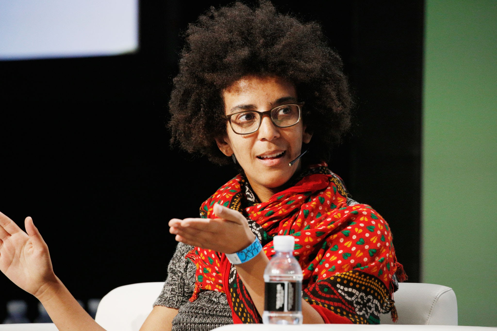

Aylin Caliskan is a prominent figure in AI research, focusing on the societal impact of AI, particularly in natural language processing (NLP), machine learning, and human-AI interaction. Her work is known for exposing hidden biases in machine learning models, showing how AI can reflect and perpetuate societal inequalities. By developing methods for bias detection and promoting fairness, transparency, and accountability, Aylin’s research is critical in the quest for ethical AI. Her contributions help ensure that AI technologies benefit society equitably, emphasizing the importance of mitigating discrimination embedded in automated systems.Learn more about Aylin's work

Timnit Gebru
Timnit Gebru is a computer scientist who has made significant contributions to understanding the ethical challenges posed by AI. Her research emphasizes algorithmic fairness, particularly the biases that disproportionately affect marginalized communities. As a co-founder of Black in AI, Timnit has worked to increase diversity in AI research and has advocated for more inclusive and socially aware AI development. She is also well-known for her critical stance on how large tech companies handle ethical issues in AI, particularly regarding the transparency and accountability of their algorithms.Learn more about Timnit's research
Joy Buolamwini
Joy Buolamwini is a computer scientist and digital activist best known for founding the Algorithmic Justice League, which aims to highlight the biases and inequities in AI systems. Her research has revealed the racial and gender disparities present in facial recognition technologies, pushing for more ethical and fair use of AI in society. Joy’s work has sparked important conversations about the responsibility of technology companies to create unbiased systems. Through her advocacy and research, she has become a leading voice in promoting fairness and accountability in AI development, particularly in technologies that affect marginalized groups.Learn more about Joy's contributions